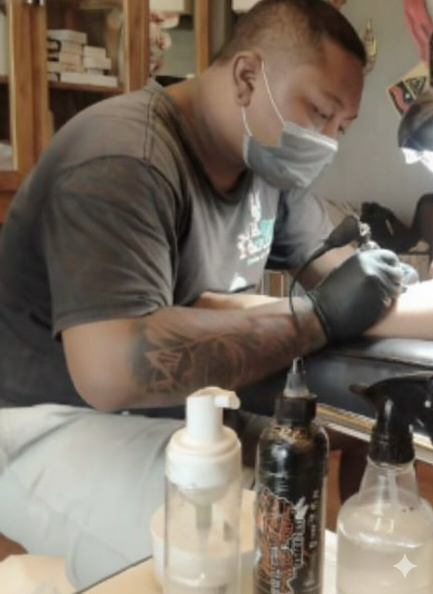

01With years of professional experience, our first resident artist is known for clean line work, strong composition, and adaptability across styles. Trained in Bali, their work reflects patience, balance, and attention to detail, ensuring each tattoo feels personal, timeless, and well executed.